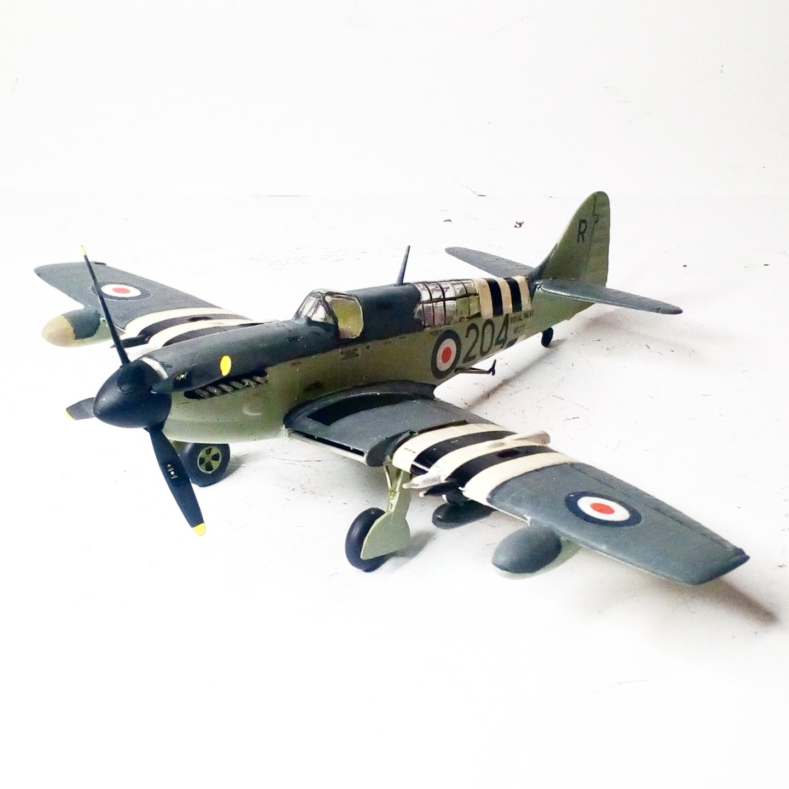
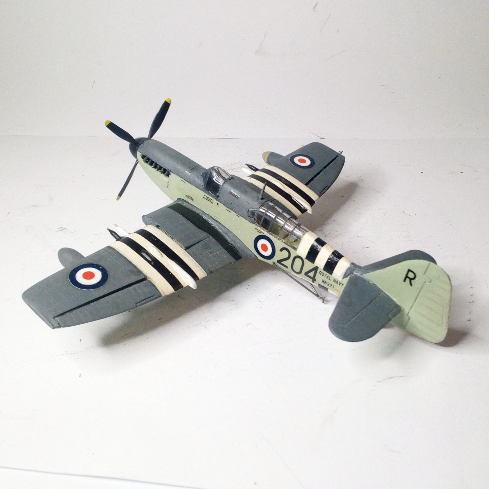

Aerei · scale model archive
Fairey Firefly
Fairey Firefly — Kit: Airfix, Scale: 1/72. No 812 Sqn Fleet Air Arm HMS Glory Korea 1951 #1/72 #Airfix #Firefly

Photo gallery

English description
No 812 Sqn Fleet Air Arm HMS Glory Korea 1951
#1/72 #Airfix #Firefly
Descrizione italiana
No. 812 Sqn, Fleet Air Arm, HMS Glory, Corea, 1951.